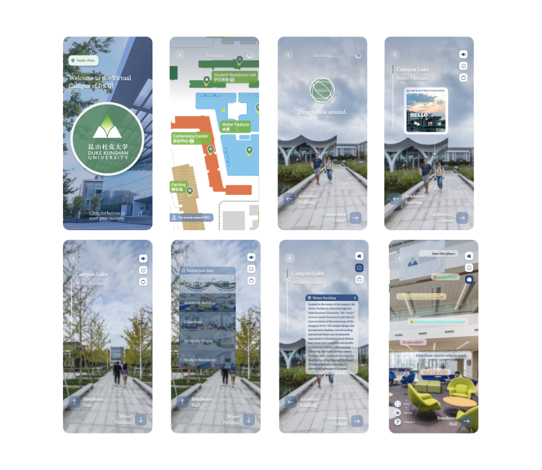
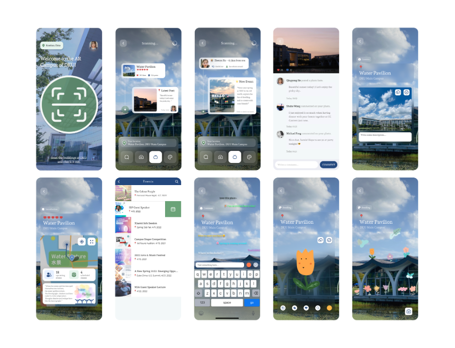

DKU AR Campus
Exploring Social Interactions with Collocated People and Connections with Surrounding Environment in an Augmented Reality Context.
Exploring Social Interactions with Collocated People and Connections with Surrounding Environment in an Augmented Reality Context.
As AR technology resides in the physical space between people, collaborative AR essentially attempts to augment the face-to-face collaborative experience, thus providing “a richness of interaction seemingly unmatched by any other means of communication”. In the research, we are creating an AR mobile app, DKU AR Campus, and investigating how augmented reality technology can support spatial digital co-creation and social interaction. We aim to understand multi-users' social dynamics and examine their co-creation behaviors in an embodied AR context and derive design implications to shed light on future research.
Examples of AR applications have demonstrated that there is a value in these technologies to support co-located and distributed collaboration in education and working environment. Additionally, while mobile social media content stays mainly detached from the physical environment leading to a feeling of disconnect between users and their surroundings, latest developments in AR may actually allow tackling this challenge by embedding digital content into the user’s physical surroundings. Gamifed approaches similar to Pokémon Go have proved their potential in reshaping the user-place relationship and sense of place by changing the spatial affordance and deepening user’s connection to the physical space and sense of community. Other approaches embedded AR content into a narrative linked to the physical place, which facilitated users’ spatial immersion, emotional attachment and contextual understanding. Location-based AR applications also foster the exploration of new areas and increase users’ will-ingness to be physically active outdoors. They also foster collaboration and social interaction more than purely 2D digital social networks through the shared spatial experience.
In order to fill in the research gap of lacking social connections with collocated people and surrounding environment, we plan to deliver a mobile AR app prototype - DKU AR Campus, which allows its users to have interactive social experiences within the augmented reality context, including co-creative behaviors such as creating or sharing information, ideas, interests, and other forms of expression within a digital community overlaid onto the physical world.
As the first step towards a user-centered understanding of how co-located social relationships are mediated within AR context, we aim to conduct a pre-study co-design workshop following the principles of design thinking in which we get exposed to what features could enhance embodied connections between human body and environment. The overall goal is to provide insights into practices, problems and challenges encountered by potential user groups, and identify a range of recommendations for how to build effective mobile AR interfaces based on various kinds of social behaviors. The co-design workshops were conducted via Zoom on August 2, 2022, with 22 participants in total. Each workshop lasted around 60 minutes.
We firstly investigated their familiarity to commercial AR apps and opinions on social interactions via emerging digital medium from a pre-study survey. According to the responses, three of the most popular commercial AR applications that our participants usually use are entertaining games, beauty filter apps and daily practical apps, which could either shape their virtual identities or bring convenience to their real life. Then, we collect opinions on participants’ most favorite features in a mobile AR application. User generated content and co-creation activities out of the social media framework and into a more organic, interactive AR environment are highly expected by the user community.
We designed two modes for this application in order to meet different needs from the DKU community. In the off-site mode of exploration, DKU visitors or DKUers who are currently off campus can freely immerse themselves in the augmented campus environment via their mobile devices. And their behaviors are mainly from the perspective of an “observer” of all the on-campus activities. For example, they can not only switch the sites and read building introductions, but also see recent story posts from on-campus students and watch their live chatting bubbles.
In the on-site mode of social collaboration, DKU community members who are currently on campus can participate in various social AR activities that we designed to enhance the social interactions with collocated people and connections with the surrounding environment. Their behaviors are mainly counted as “creators” with the significance of those user-generated content in this application. For example, on-site users could publish their own story posts and interact with others in the comment area, send out chatting bubbles on different locations, create virtual doodling around the campus via an additional digital layer.
Based on the results of our pre-study co-design workshops in 3 rounds, we’re going to implement two of the most comprehensive prompts provided by all the participants. These two prompts must be concluded in the following form, such as, “to enhance co-creative behaviors at the Commencement Graduation based on the doodling feature”, “to enhance informative behaviors in the Orientation Week based on the bulletin board feature”, etc. We’ll mainly refer to the brainstorming and suggestive comments during the ideation and prototyping process and come out with a working prototype of the mobile AR application.
Then, after the completion of our first prototype, we firstly plan to invite the participants who attended our pre-study co-design workshops to do the usability testing for us. The participants are going to finish simple tasks in the two prepared prompts to test if the overall system works effectively for them. After that, semi-structured interviews with these participants will be conducted to consult if any settings of the prepared prompts and corresponding functions meet their expectations or require further improvements. After analysis of the interview results, we’ll continue to work on the second prototype of this application. After the final completion of our second prototype, we’ll carry out the second round of usability testing by inviting the general public inside the DKU Community to use the application on their mobile ends and reflecting their opinions via a customized survey based on the SUS scale.


Copyright ©. All Rights Reserved. — DKU HCI Lab • License